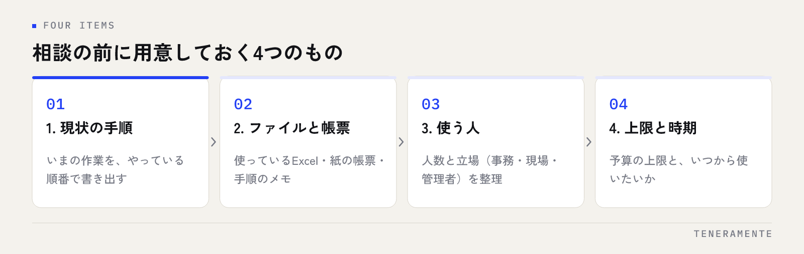

見積もりを取る前に止まってしまう——業務システムの相談でいちばん多い状態です。「何を作ればいいかが決まっていないので、まだ相談できない」と考えて半年が過ぎてしまう会社は少なくありません。名古屋で業務システム開発を依頼するときに最初に決めるのは、作るものの仕様ではなく、どの業務から手を付けるかです。この記事では、依頼する前の準備と、相談から稼働までの進み方を順に整理します。
📌 この記事の結論
業務システムの依頼は、仕様が固まっていなくても始められます。先に決めるのは、対象の業務を1つに絞ることと、社内の窓口を1人決めることだけです。この2つがあれば相談の場が成立し、残りは相手と一緒に言葉にしていけます。
01名古屋で業務システム開発を依頼する前に、決めておく2つのこと
相談の前に社内で決めておくことは、2つだけです。1つは対象の業務、もう1つは窓口になる人です。
対象の業務は、できるだけ小さく絞ってください。「社内のDXを進めたい」では相談が始まりません。「毎月の請求書をExcelから手で転記している」「現場からの日報を紙で集めて事務が打ち直している」というように、誰のどの作業を指しているかまで下げると、その場で話が進みます。範囲が広いほど見積もりの幅が大きくなり、判断もしにくくなります。
窓口になる人は、その業務を実際にやっている人か、少なくとも手順を説明できる人にしてください。決裁者が窓口を兼ねる必要はありません。むしろ現場の手順を知らない人が窓口に立つと、仕様の確認で毎回社内に持ち帰ることになり、期間が伸びます。
この2つが決まっていれば、仕様が白紙でも相談の場は成立します。社内だけで要件を固めようとして止まるくらいなら、絞った業務を1つ持って相談したほうが早く進みます。
02社内ツールにする業務の切り出し方
どの業務をシステムにするかは、次の3つが重なっているところから選ぶと失敗が少なくなります。
- 毎日または毎月決まって発生する作業。頻度が低い作業を自動化しても、作った効果が実感されません
- 手順がおおむね決まっている作業。その場の判断で手順が変わる作業は、まず手順を決めるほうが先です
- 転記や二重入力が起きている作業。同じ数字を2か所に打ち込んでいる場所は、効果が分かりやすく出ます
最初の1本に向かない業務
逆に、最初の1本には向かない業務もあります。担当者ごとにやり方が違う業務、月に数回しか発生しない業務、社外の相手の都合で手順が変わる業務です。これらは作ったあとに使われず、残ったままになりがちです。
また、既存のパッケージやクラウドサービスでそのまま足りる業務も、わざわざ作る必要はありません。会計、給与、勤怠のように形が決まっている業務は、既製品のほうが安く早く済みます。自社専用で作る価値が出るのは、自社の商習慣や社内のルールが入り込んでいて、既製品に合わせると業務のほうを曲げることになる場合です。この判断は業務アプリは内製か外注かにも整理しています。
03相談先の種類と、向いている依頼の内容
業務システムの相談先は、おおよそ次の区分に分かれます。同じ「システム開発」と書かれていても、得意な場所が違います。
| 相談先 | 向いている依頼 | 確かめておくこと |
|---|---|---|
| 大手のシステム開発会社 | 規模が大きく、長期の運用体制まで必要な案件 | 実際に手を動かす会社はどこか。担当者の体制 |
| 地域の開発会社 | 業務の手順を聞きながら形にしていく案件 | 対応できる技術の範囲と、保守の続け方 |
| フリーランス・個人 | 小さく区切った単機能の開発 | 担当者が離れたときに引き継げる形になるか |
| 業務ソフトの販売代理店 | 既製品で足りる業務の導入と設定 | 自社に合わせた改修がどこまで可能か |
| ノーコードの構築支援 | 社内で作って育てていく前提の案件 | 件数が増えたときの動きと、料金の上がり方 |
区分の違いより大事なのは、最初の打ち合わせで業務の手順を聞こうとするかです。機能の話から始める相手は、こちらの業務に合わない形を提案してくる可能性があります。業務の流れを聞いてから機能に落とす相手のほうが、後の手戻りが少なくなります。会社の比べ方そのものはAI開発企業の選び方にまとめています。
04相談の前に用意しておく4つのもの
相談の場に持っていくものがあると、初回で話が進みます。きれいな資料は必要ありません。

いま使っているExcelをそのまま見せるのが、いちばん早い
業務の説明を文章にしようとすると時間がかかります。実際に使っているExcelファイル、紙の帳票、手順を書いたメモ——この3つを机に出すだけで、相手は現状をほぼ把握できます。清書は不要です。
用意するのは、現状の作業の流れ、いま使っているファイルや帳票、使う人の数と立場、そして予算の上限と希望の時期です。予算は「いくらまでなら出せるか」の上限だけで構いません。上限が分かると、相手は範囲を調整した案を出せます。上限を伝えないまま進めると、提案が予算と合わず、やり直しになります。
希望の時期も同じです。「来期から使いたい」のように区切りを伝えると、どこまでを最初に作るかの判断ができます。時期の希望がないと、提案は全部を作る前提になりがちです。
05相談から稼働までの進み方と、各段階で決めること
初回の相談から実際に使い始めるまでは、おおむね次の順で進みます。段階ごとに「誰が何を決めるか」を先に把握しておくと、途中で止まりません。
初回の相談では、対象の業務と現状の手順を共有し、作る範囲のおおよその線を引きます。ここで概算の金額感が出ます。次に要件の整理に入り、画面と項目を決めます。この段階が発注側の時間をいちばん使う場所です。現場の人に確認しないと決められない項目が必ず出るため、窓口の人が社内で回答を集める形になります。
設計と開発が始まったあとは、発注側の作業はいったん減ります。ただし途中で画面を見せてもらう機会を作ってください。文字の資料で合意した画面と、実際に動く画面の印象は違います。試作の段階で直せば小さな修正で済みますが、完成後に気づくと作り直しになります。
最後にテストと移行です。既存のExcelのデータを移す作業、現場への操作説明、運用の開始日を決めます。ここは発注側の時間が再び必要になるので、繁忙期と重ならないように逆算してください。見積書の各項目がこの段階のどこに対応するかは、アプリ開発の見積書の見方で項目ごとに整理しています。
06近くの会社に依頼すると変わること、変わらないこと
開発そのものは場所に関係なく進みます。打ち合わせはオンラインでも成立しますし、距離があるから品質が落ちるということもありません。
変わるのは、現場を見てもらえるかどうかです。業務システムは、実際の作業の様子を見ると前提が変わることがよくあります。画面の前で手を動かしている様子、紙をどう並べているか、誰が誰に声をかけているか——こうした情報は言葉での説明からは落ちます。現場に来てもらえる距離なら、その落ちた分を埋められます。
もう一つは、運用に入ってからの関わり方です。使い始めてしばらくは、小さな直しの相談が続きます。短時間で顔を合わせられる距離だと、この相談が気軽になります。
距離で判断しないほうがよいこと
一方で、「近いから安心」という理由だけで選ぶのは危険です。確かめるべきは、自社の業務に近い領域を扱った経験があるか、保守を続けられる体制か、そして作ったものの権利関係がどうなるかです。距離は加点の材料ですが、判断の中心ではありません。
07依頼前に確認するチェックリストと、よくある失敗
相談に行く前に
- 対象の業務を1つに絞った（部署名ではなく、作業の名前で言える）
- その業務の現状の手順を、順番に書き出した
- いま使っているExcel・帳票・メモを手元に集めた
- 使う人の数と、立場（事務・現場・管理者）を整理した
- 予算の上限と、いつまでに使い始めたいかを決めた
- 社内の窓口になる人を1人決めた
提案を受け取ったら
- 作る範囲と、作らない範囲が書き分けられている
- 各工程に工数（人日・人月）が書かれている
- 試作や途中での確認の機会が、予定に入っている
- データ移行を誰がやるかが書かれている
- 公開後の保守に含まれる作業と、含まれない作業が分かれている
- ソースコードとサーバー・ドメインの名義がどちらに残るか書かれている
よくある失敗とその避け方
全社の仕組みを一度に作ろうとする。範囲が広いほど要件が固まらず、金額も期間も読めません。1つの業務で動くものを作り、使えることを確認してから広げてください。
現場に相談せず管理側だけで決める。使う人が決定に関わっていないシステムは、動いていても使われません。要件の整理の段階で、現場の人に画面を見せてください。
要件を完璧にしてから相談しようとする。社内だけで仕様を固めるのは難しく、そこで止まります。絞った業務と現状の手順があれば、相談は始められます。
社内の工数を数えていない。要件の確認、データの整理、操作説明は発注側の時間を使います。ここを見ずに予定を組むと、開発が終わっても稼働が始まりません。
作ったあとの担当を決めていない。運用に入ると、項目の追加やマスタの更新が必要になります。社内の担当を決めていないと、使われないまま放置されます。
既製品で足りる業務を作ってしまう。会計や勤怠のように形が決まっている業務は、既製品のほうが安く早いことが多いです。作る前に既製品を調べてください。
08自分で進める場合と、専門家に任せる場合の分かれ目
社内で作るか、外に依頼するかの分かれ目は、技術の有無よりも「作った人が離れても続けられるか」です。
自分で進めやすいのは、対象が1つの部署の中で完結していて、データの件数が多くなく、社内に作る人と直す人の両方がいる場合です。この条件なら、表計算ソフトやノーコードのツールで十分に回ります。作りながら業務のほうを整える効果もあります。
依頼を検討したほうがよいのは、複数の部署やシステムをまたぐ場合、社外の相手とデータをやりとりする場合、扱う情報に個人情報や取引条件が含まれる場合です。また、作る人が1人しかいない状態で業務の中心に置くのも避けたほうがよいでしょう。その人が異動や退職で離れた時点で、誰も直せなくなります。
判断の順番としては、まず対象の業務を1つ決め、社内で作れる範囲かどうかを見る。社内で試して限界が見えた時点で、その経験を持って相談に行く。この順番だと、相談の場で「何を任せたいか」を自分の言葉で説明できる状態になります。
09よくある質問
作りたいものが決まっていなくても相談できますか？
小さな会社でも依頼できる規模のものですか？
既存のExcelのデータは引き継げますか？
開発したあと、社内で直せるようになりますか？
社内に詳しい人がいない状態で発注して大丈夫でしょうか？
10まとめ：業務を1つ絞れば、相談は今日から始められる
名古屋で業務システムや社内ツールの開発を依頼するときに必要な準備は、仕様書ではありません。対象の業務を1つに絞ること、現状の手順を書き出すこと、いま使っているファイルを手元に集めること、窓口を1人決めること——この4つです。
相談先を選ぶときは、距離や規模より、最初の打ち合わせで業務の手順を聞こうとするかを見てください。機能の説明から入る相手より、こちらの作業を理解しようとする相手のほうが、後の手戻りが少なくなります。そして提案を受け取ったら、作らない範囲と、公開後の保守、権利の名義の3点を確認してください。
TENERAMENTEなら、最初の相談で対象の業務とお手元のExcel・帳票を見せていただくところから始め、3回のミーティングで作る範囲を言葉にします。初期費用30万円〜・最短2週間でPoC（試作）をお出しできるので、全体を発注する前に実際の画面で「この形で合っているか」を確認してから進められます。ソースコードとサーバー・ドメインの名義はお客様に残る形にしているため、作ったあとの預け先に縛られることもありません。要件が白紙の状態でも、現状の手順を伺いながら整えていけるので、社内で仕様を固めきる必要はありません。AI業務アプリ開発の進め方をご覧いただいたうえで、お問い合わせからお気軽にご相談ください。